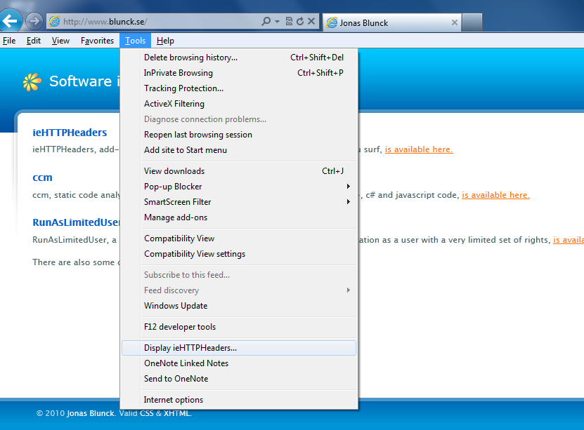
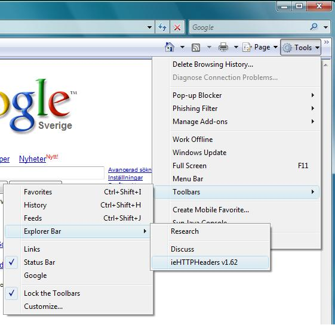
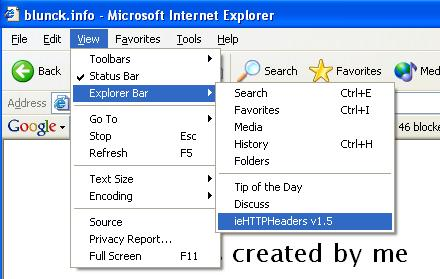

What is ieHTTPHeaders?It is an explorer bar for Microsoft Internet Explorer 6 and later, that displays the HTTP request and response headers for you as you use the browser and surf.How do I enable it?Internet Explorer 9The picture below shows how to enable ieHTTPHeaders on IE8 and IE9. Not that on ieHTTPHeaders only runs on 32-bit verions of Internet Explorer (which is available on 64 bit versions of Windows). Internet Explorer 7The picture below shows how to enable ieHTTPHeaders on IE7. Internet Explorer 6The picture below shows how to enable ieHTTPHeaders on IE6.x. TroubleshootingI've had occasional reports about installation problems, where no explorer bar option for ieHTTPHeaders is available. It seems that it is best fixed by re-registering the explorer bar. To do so, run 'regsvr32 iehttptrace.dll' from directory where ieHTTPHeaders is installed.ContactFeel free to email me at jonas.blunck@blunck.info.Sincerely, Jonas Blunck |